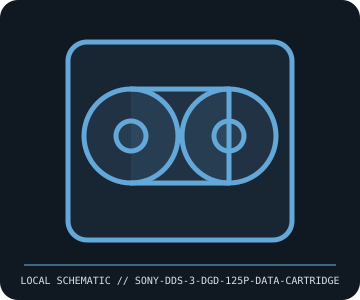

[ REMOVABLE MEDIA // INDIVIDUAL RECORD ]
Sony DDS-3 DGD-125P Data Cartridge
DDS-3 / Digital Data Storage format, 125 m tape generation. This entry describes the identified medium or reader, not a bundled drive/media pair; exact capacity and compatibility are model- and host-dependent.

IDENTIFICATION: Record the full label, manufacturer part number, revision/date code, format markings, and packaging. Product-family names alone do not identify capacity generation or supported drive.
Format and compatibility
| Catalog subcategory | Tape and optical cartridges |
|---|---|
| Catalog identity | Sony DDS-3 DGD-125P Data Cartridge |
| Format / era | DDS-3 / Digital Data Storage format, 125 m tape generation |
| Media/device distinction | This record is the removable medium only; the compatible drive is separate and not included. |
| Capacity / interface | Sony DGD-125P DDS-3 cartridge; 12 GB native capacity (about 24 GB at a vendor-stated 2:1 compression ratio), using 4 mm DAT media. Compressed capacity is workload-dependent, not a guaranteed capacity. |
| Compatibility | Requires a DDS-3-compatible DAT tape drive. Some DDS-3 drives support earlier DDS generations; cross-generation compatibility is drive-specific. DDS is not interchangeable with DAT audio cartridges by label alone. |
| Variant caveat | Do not confuse DDS-3 with DDS-4, DAT-72, or later DAT generations. Confirm drive model, firmware, cartridge generation, cleaning requirements, and backup software; quoted compressed capacity assumes compressible data. |
Media care and preservation
Keep in its plastic case, away from dust, moisture, magnets, and rapid temperature/humidity changes. Allow sealed cartridges to acclimate before use. Do not touch tape or expose it to smoke; record load/error history and verify backups through restore tests.
- Preserve original packaging, labels, and acquisition/context notes; photograph both sides and record any write-protect state before use.
- Keep valuable contents in at least two independently verified copies on separate storage. Record a checksum and test a restore; removable media alone is not a preservation plan.
Model and version caveats
Do not confuse DDS-3 with DDS-4, DAT-72, or later DAT generations. Confirm drive model, firmware, cartridge generation, cleaning requirements, and backup software; quoted compressed capacity assumes compressible data.
Compatibility statements are limited to the named format/model and published host support. Check manufacturer manual, firmware, regional SKU, and media generation before inserting or writing. A similar connector or cartridge shell is not proof of compatibility.
Sources & further reading
- Sony — DDS data cartridge product documentationManufacturer support/manual archive; search for DGD-125P / DDS-3 to verify cartridge-specific handling and rated capacity.
- SNIA — Storage Networking Industry AssociationIndustry reference for DDS generations and native versus compressed capacity terminology.
Sources identify the relevant standard, manufacturer, or product family. Where an archived SKU-specific datasheet is unavailable, the exact label/manual and supported host list take precedence over family-level marketing claims.